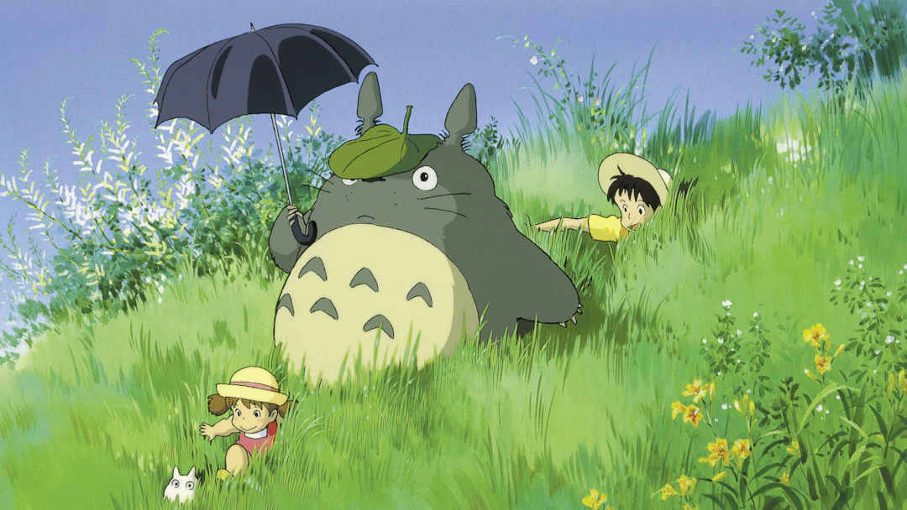
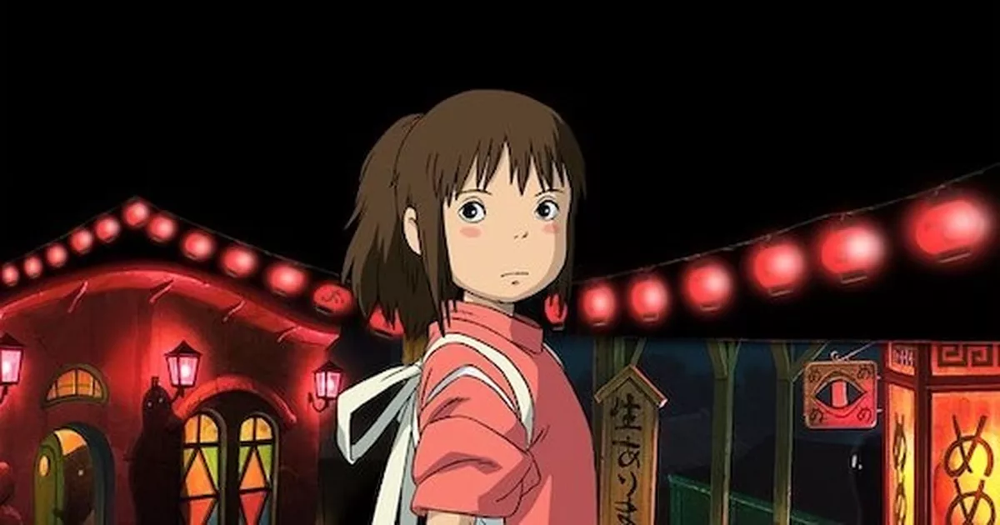
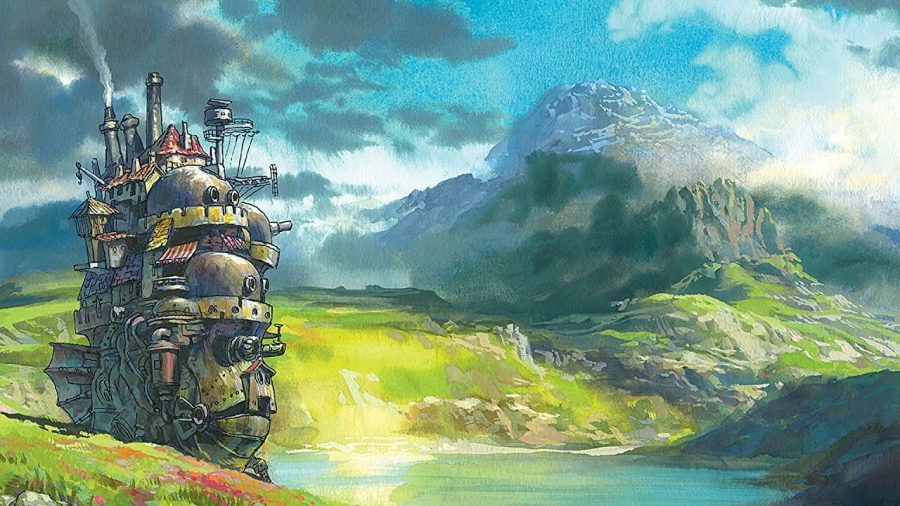
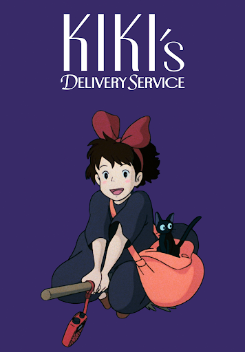
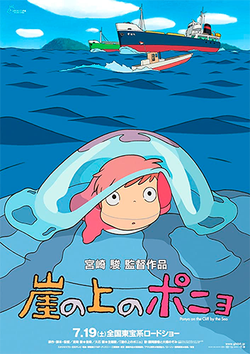
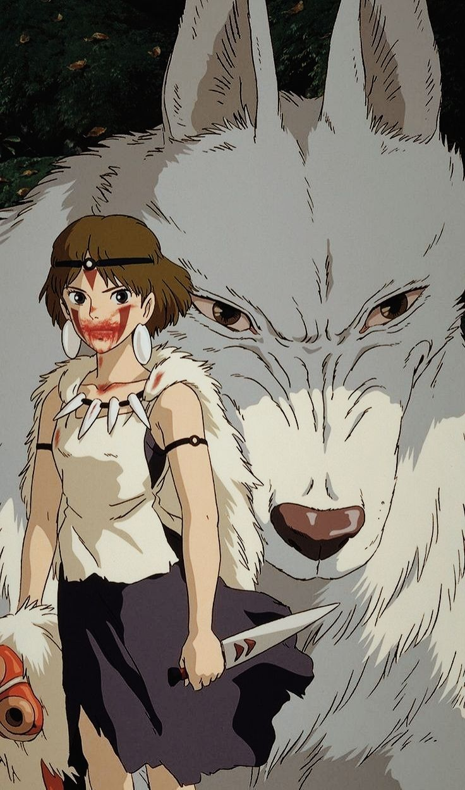

Year: 1988
Director: Hayao Miyazaki
Two sisters discover magical forest spirits while living in the countryside.
Learn More
Year: 2001
Director: Hayao Miyazaki
Chihiro enters a mysterious world of spirits and must save her parents.
Learn More
Year: 2004
Director: Hayao Miyazaki
A young woman cursed by a witch finds refuge in a magical moving castle.
Learn More
Year: 1989
Director: Hayao Miyazaki
A young witch starts an independent life by creating a flying delivery service.
Learn More
Year: 2008
Director: Hayao Miyazaki
A magical goldfish dreams of becoming human after meeting a young boy.
Learn More
Year: 1997
Director: Hayao Miyazaki
A young warrior becomes involved in a battle between nature and industry.
Learn More